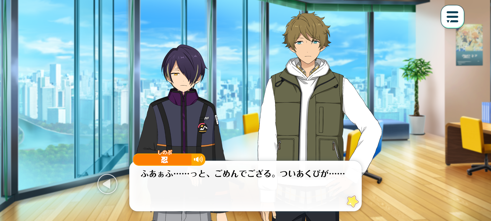
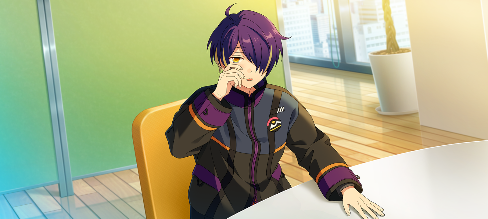
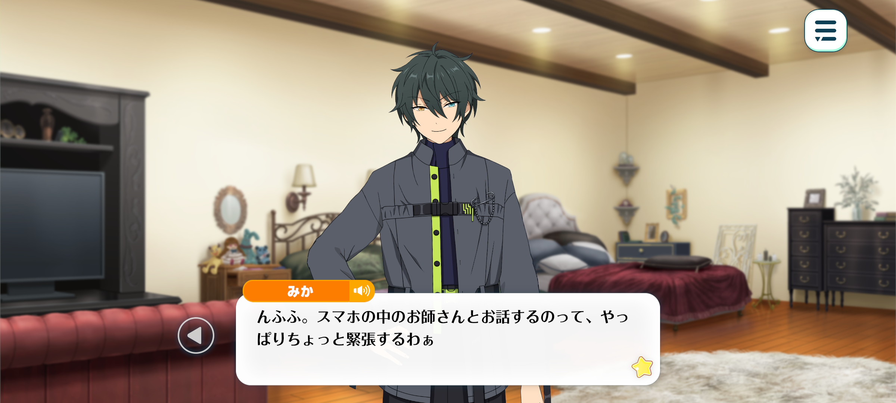
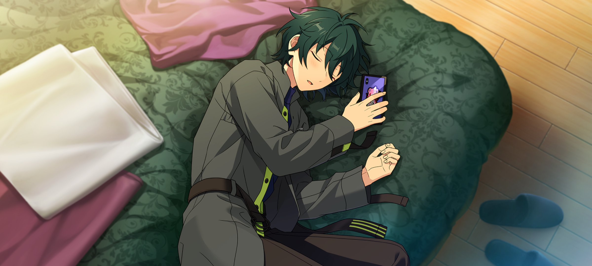

Easter To You
⌒Heartful 1⌒


Time: One afternoon

Midori: …I see. How is the shuffle unit going?
Shinobu: Fuaa… Apologies for all the yawning…
Indeed, things are going wonderfully! Hibiki-dono teaches us all sorts of things at every lesson.
And that's not all. We've also been discussing at school what else we can do for Easter Fes…
He's keeping both our bodies and minds busy. Every day has been so fulfilling! ♪
Kanata: i am “relieved” that wataru has joined your unit. how is he doing?
Shinobu: Hibiki-dono is simply… amazing! I truly believe the term “all-round entertainer” was coined just for him!
During our last lesson, we were greeted by a torrent of flower petals as soon as we entered the room.
It really felt as though spring had finally arrived! ♪
Midori: Ehhh… Well, I suppose I can't really say anything since I wasn't there, but… Is he actually allowed to do that?
Cleaning all that up must've been a pain. And I don't think lessons are really the place for something like that…
Shinobu: Actually, it seems Hibiki-dono hadn't intended for there to be quite so many petals. It took us a while to clean everything up, but it made for a lovely memory, too ♪
Kanata: hehe. wataru seems quite eager to make his “kohai” happy, doesn't he?
how about the “performance”? i heard he's been teaching you all sorts of things for it.
Shinobu: At the moment, we're all just about able to do backflips!
And… behold!
Midori: Uwaaah?! Shinobu-kun's arm just stretched…!?
Shinobu: All you have to do is dislocate your joint! Nihihi, it's so much fun learning one new thing after another~ ♪
Midori: I'm glad you're having fun, Shinobu-kun. But if everyone can do things like that, it sounds less like an idol unit and more like some shady travelling circus…
Aren't you worried about what all this might be doing to your bodies…? And, well, what exactly is the point of being able to stretch your arm like that…?
Ah, um… Maybe I didn't put that very well. Anyway, what sort of performance are you planning for Easter Fes?
Shinobu: ? Of course, our performance will have an explosive, flashy feel to it! And everyone knows that a good performance—
Ha…haayawnnn...
Kanata: shinobu, you've been yawning quite a lot today, hm? are you tired?
Shinobu: It seems I am. We've all been working very hard, practising and discussing our plans for the performance every day. And when we get home, we also—
Ah, another one…
Yaaaaawn. Nyamnyam…
Midori: That’s a lot of yawns. Are you getting enough sleep…?
Kanata: are you “taking” enough breaks? i know you get absorbed in your “lessons”, but resting is important too.

Shinobu: Indeed… I apologise for making you worry. I've been staying up a little later than usual recently, so perhaps that's why.
I want to do everything I can to be of help to everyone.
TimeL Later, the same night

Mika: Ngaha. Even when we're just talkin' on the phone, I still get all nervous speakin' to Oshi-san.
Can ya see me alright?
Shu: Don't stare directly into the camera like that. You're much too close.
Mika: But I feel like I can see Oshi-san's face better when I'm closer.
Shu: And that makes it impossible for me to see your face. Now, would you mind moving back a little…? Yes, that's much better.
Mika: Mhm ♪ Well then, what should we talk about today? Uhhh…
Oh, right! Anzu-chan's makin' the costumes this time, but I'm helpin' her out here and there.
Shu: Oh? I imagine they'll be inspired by Easter, then?
Mika: Uhuh. The colours are all cute and spring-like. They're pretty different from the kinda stuff I usually like, or what we normally wear in Valkyrie.
Oshi-san's real good at makin' cute costumes. I'm just doin' my best to help out and tryin' to get outta my comfort zone a bit.
Shu: If you're already aware that these are areas where you lack experience, then surely there's no problem?
You're only there to assist her, after all. Why not take the opportunity to learn from her ideas? She seems to be constantly refining her own skills, so she should make a perfectly good example to learn from.
Now then, Kagehira, what exactly are you—...?
I thought you'd simply gone quiet, but the screen's gone completely black. What's happened?! Kagehira...!

Mika: Mmm~...Zzzzz…♪
Ritsu: …Ah. I was wondering why it had gotten so quiet. Turns out Mikarin's fallen asleep.
It's kinda funny hearing Mr Oshi-san's voice, but… he's probably worried, so I guess I'll help him out a little.
Sorry, Mikarin. Mind if I borrow your phone for a bit?
Hiii~
Shu: …Sakuma. Why is your face on my screen? I was speaking with Kagehira.
Ritsu: Mikarin was lying down and then, bam! Out like a light. Look, see for yourself.
Mika: Hngg, zzz…
Shu: …His sleeping face is sloppy. His mouth is all slacken. How unbecoming.
Ritsu: Fufu. You're even particular about how he looks while he's sleeping, huh?
…Though, Mikarin's been falling asleep like this quite a lot lately.
He even got up today just so he could call you. But once it gets to about this time, he's completely out.
He comes back to the dorm and gets straight to work at his desk. Then, it's like he's used up every last bit of energy he has and goes, "goodnight~"
In the mornings, he's still fast asleep, too. I've even had to wake him up myself once.
Shu: …I see. Well, from what I can tell, he doesn't appear to be particularly fatigued.
Has he been eating properly?
Ritsu: Mmm… We're not always together, so I can't say for sure, but I'd imagine so.
Shu: Good grief. His body is clearly exhausted, yet he forces himself to get up, only to fall asleep almost immediately.
When he wakes up, he'll be terribly worried about having left our call like this. Tell him not to be so careless with his health.
I'll be checking in with you as well.
Ritsu: Gotcha. I'll keep an eye on him. It'd be a real shame if he collapsed before Easter Fes, especially after all the hard work he's been putting in.
Shu: Quite right… Those reports gave me the impression that everything was going smoothly. Next time, I'll make sure he tells me everything that's been going on.
I'm sorry to trouble you with one more thing, but please put a blanket over him.
Ritsu: Yupyup. Well then, I'll hang up now. Goodnight, Mr Oshi-san~
And goodnight to you too, Mikarin…♪